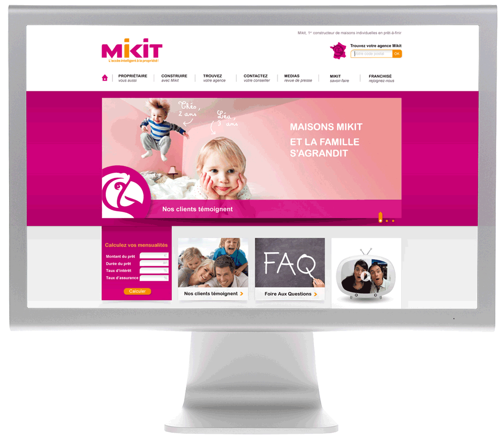

Cécile Guyart
Directrice artistique

Mikit sites

Site national, franchisé et agences
Sites gérés via CMS
Direction Artistique des différents sites Mikit. Mise en place de la nouvelle identité visuelle de Mikit conçue en collaboration avec Gérard Caron.Mikit, l'accès intelligent à la propriété
Client : Mikit
Conception : agence .../en Personne
Direction artistique : Cécile Guyart
© 2013 Cecile Guyart. Directrice artistique. Paris. Tous droits réservés.